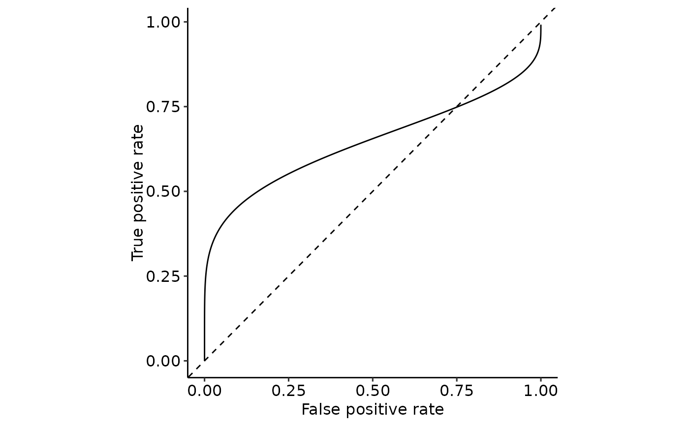

ROC curve for given cumulative distribution functions
plot_ROC_cdf.RdROC curve for given cumulative distribution functions
Arguments
- cdf_positive
Cumulative distribution function for the positive class
- cdf_negative
Cumulative distribution function for the negative class
- xmin
Minimum value of simulated points for the plots from the distributions.
length.outpoints will be generated between[xmin, xmax]. PURELY VISUAL, ROC curves are calculated based on the actual distributions!- xmax
Maximum value of simulated points for the plots from the distributions.
length.outpoints will be generated between[xmin, xmax]. PURELY VISUAL, ROC curves are calculated based on the actual distributions!- length.out
The number of simulated points for the plots from the distributions.
length.outpoints will be generated between[xmin, xmax]. PURELY VISUAL, ROC curves are calculated based on the actual distributions!
Examples
plot_ROC_cdf(
cdf_positive = function(x) pnorm(x, mean = 1, sd = 1),
cdf_negative = function(x) pnorm(x, mean = 0, sd = 1),
xmin = -5, xmax = 15, length.out = 2500
)
plot_ROC_cdf(
cdf_positive = function(x) pnorm(x, mean = 1, sd = 1.5),
cdf_negative = function(x) pnorm(x, mean = 0, sd = 1),
xmin = -5, xmax = 15, length.out = 2500
)
plot_ROC_cdf(
cdf_positive = function(x) pnorm(x, mean = 1, sd = 2.5),
cdf_negative = function(x) pnorm(x, mean = 0, sd = 1),
xmin = -5, xmax = 15, length.out = 2500
)
